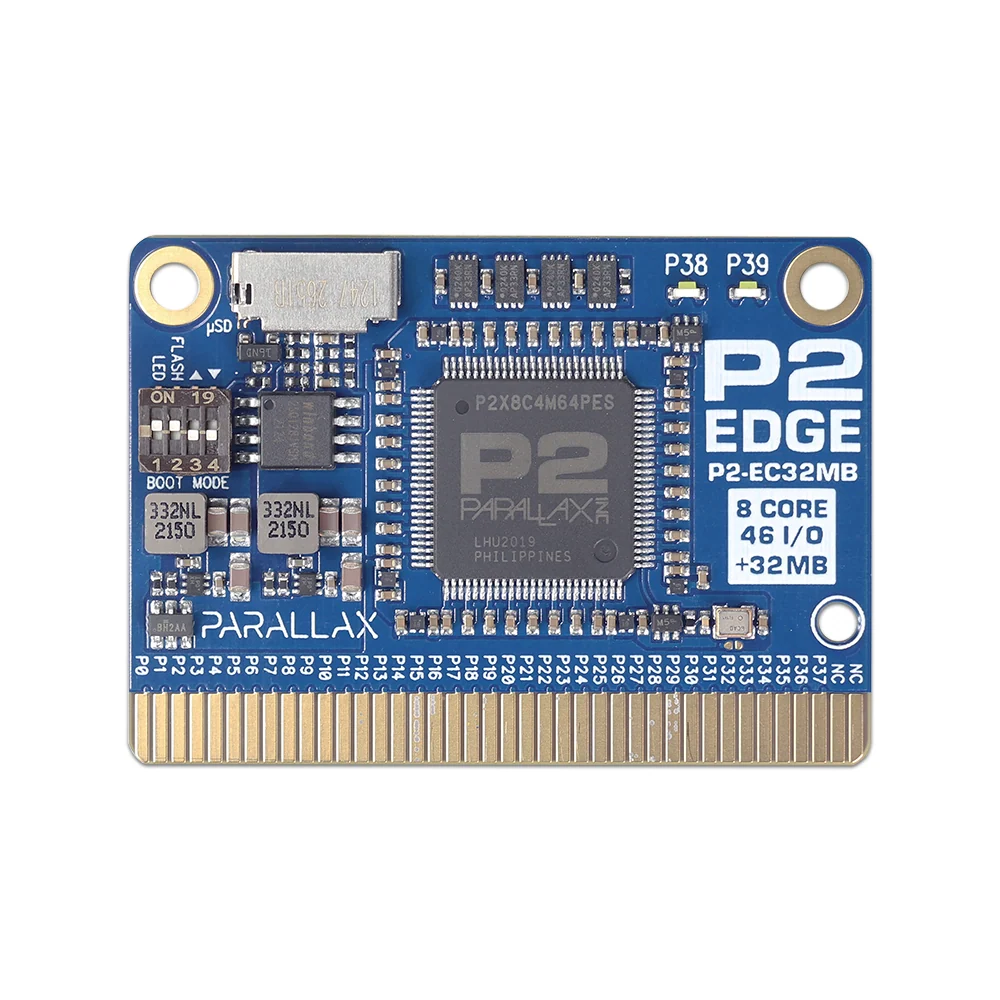

Propeller 2 workbench.
Plug in your board, load MicroPython, and run your first script in ViperIDE. All over USB, right in this tab.

P2 Edge
P2-EC32MB- Clock
- 160 MHz
- Hub RAM
- 512 KiB
- PSRAM
- 32 MiB
Install MicroPython
Already running MicroPython?
What do I need?
A powered P2 Edge carrier, a 3.3 V USB serial adapter with reset (such as a Prop Plug), and desktop Chrome or Edge. Enable serial boot, close other serial tools, then pick the adapter in the browser’s device chooser. On Linux your account needs access to the serial device.
Can I boot my SD card?
Insert a FAT32 card prepared with _BOOT_P2.BIX in its root. The ROM can start that copy of MicroPython over USB. Prepare the card
How do I check a flash install?
Boot flash replaces your existing boot program. Keep a recoverable copy. Enable flash boot with a serial window using your board guide. Power off before removing a bootable SD card. After installing, power-cycle the board and choose Connect to the IDE. A fresh prompt confirms cold boot. Persistent installation currently has host-side protocol checks only.